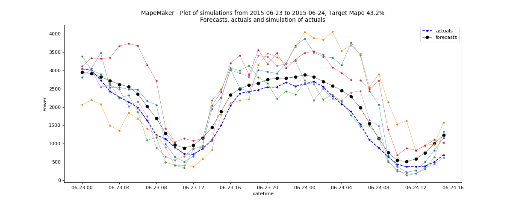

Second File Example¶
CAISO Wind and BPA data Examples¶
The user need to set the second file option when the file that he/she want to simulate is missing forecast/actual data. The following command will take the input file 2012-2013_BPA_forecasts_actuals.csv and the second file wind_total_forecast_actual_070113_063015.csv. The second file will learn the error distribution from the input file, and use it to create the simulation data. In order to fit the process well, we used a wild range of data for the input file. In this example, we set the date range for the input file from “2012-6-3 00:00:00” to “2013-8-3 00:00:00 and generate the scenarios from “2015-6-29 00:00:00” to “2015-6-30 00:00:00” for the second file.
python -m mape_maker -xf "mape_maker/samples/2012-2013_BPA_forecasts_actuals.csv" -sf "mape_maker/samples/wind_total_forecast_actual_070113_063015.csv" -s 1234 -n 5 -o "BPA_Wind_1" -is "2012-6-3 00:00:00" -ie "2013-8-3 00:00:00" -ss "2015-6-23 00:00:00" -se "2015-6-30 00:00:00"
- -xf “mape_maker/samples/2012-2013_BPA_forecasts_actuals.csv”:
The input file containing forecasts and actuals for specified datetimes.
- -sf “mape_maker/samples/wind_total_forecast_actual_070113_063015.csv”
The second file containing forecasts and actuals for specified datetimes.
- -n 5:
The number of simulations that we want to create is “3”. This will create three simulation columns in the output file.
- -bp “ARMA”:
Use “ARMA” as the base process. The default base process is set as “ARMA”.
- -is “2012-6-3 00:00:00”:
The start date for the computation of the distributions is “2012-6-3 00:00:00”
- -ie “2013-8-3 00:00:00”:
The end date for the computation of the distributions is “2013-8-3 00:00:00”
- -ss “2015-6-23 00:00:00”:
The start date of the simulation is “2015-6-23 00:00:00”
- -se “2015-6-30 00:00:00”:
The end date of the simulation is “2015-6-30 00:00:00”
- -o “BPA_Wind_1”:
Create an output directory called “BPA_Wind_1”, in which will store the simulation output file.
- -s 1234:
Set the seed as “1234”, so it won’t randomly choose a number as the seed.
After running the command line, you should see a similar plot like this:
